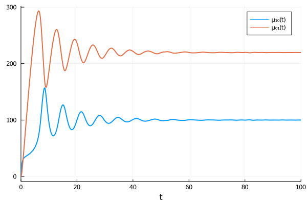
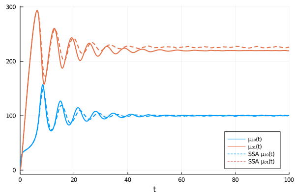

Using MomentClosure
This tutorial is an introduction to using MomentClosure to define chemical reaction network models, generate the corresponding moment equations, apply moment closure approximations and finally solve the resulting system of ODEs. To demonstrate this functionality, we will consider a specific case of an oscillatory chemical system known as the Brusselator, characterised by the reactions
\[\begin{align*} 2X + Y &\stackrel{c_1}{\rightarrow} 3X, \\ X &\stackrel{c_2}{\rightarrow} Y, \\ ∅ &\underset{c_4}{\stackrel{c_3}{\rightleftharpoons}} X. \end{align*}\]
We have chosen this particular model to start with as it has been studied with different moment closures before by Schnoerr et al. (2015) and so it is useful as a reference point. The plots of moment trajectories we obtain in this tutorial fully reproduce some of the figures published in the paper, hence (partially) proving the validity of our implementation.
The terminology and the notation used throughout is consistent with the Theory section of the docs and we advise giving it a skim-through.
Model Initialisation
Catalyst.jl provides a comprehensive interface to modelling chemical reaction networks in Julia and can be used to construct models fully-compatible with MomentClosure. For more details on how to do so we recommend reading Catalyst's tutorial. This way, the Brusselator can be defined as:
using Catalyst
rn = @reaction_network begin
# also including system-size parameter Ω
(c₁/Ω^2), 2X + Y → 3X
(c₂), X → Y
(c₃*Ω, c₄), 0 ↔ X
end c₁ c₂ c₃ c₄ ΩThe returned rn is an instance of ModelingToolkit.ReactionSystem. The net stoichiometry matrix and an array of the corresponding propensities, if needed, can be extracted directly from the model using MomentClosure functions netstoichmat and propensities respectively.
Note that MomentClosure add support for systems containing geometrically distributed reaction products—see this tutorial for more details.
Generating Moment Equations
We can now obtain the moment equations. The system follows the law of mass action, i.e., all propensity functions are polynomials in molecule numbers $X(t)$ and $Y(t)$, and so we can generate either raw or central moment equations, as described in the Theory section on moment expansion.
Raw Moment Equations
Let's start with the raw moment equations which we choose to generate up to second order ($m=2$):
using MomentClosure
raw_eqs = generate_raw_moment_eqs(rn, 2, combinatoric_ratelaw=false)Note that we have set combinatoric_ratelaw=false in order to ignore the factorial scaling factors which Catalyst adds to mass-action reactions. The function generate_raw_moment_eqs returns an instance of RawMomentEquations that contains a ModelingToolkit.ODESystem composed of all the moment equations (accessed by raw_eqs.odes).
We can use Latexify to look at the generated moment equations:
using Latexify
latexify(raw_eqs)\[\begin{align*} \frac{d\mu{_{10}}}{dt} =& c{_3} \Omega + c{_1} \mu{_{21}} \Omega^{-2} - c{_2} \mu{_{10}} - c{_4} \mu{_{10}} - c{_1} \mu{_{11}} \Omega^{-2} \\ \frac{d\mu{_{01}}}{dt} =& c{_2} \mu{_{10}} + c{_1} \mu{_{11}} \Omega^{-2} - c{_1} \mu{_{21}} \Omega^{-2} \\ \frac{d\mu{_{20}}}{dt} =& c{_2} \mu{_{10}} + c{_3} \Omega + c{_4} \mu{_{10}} + 2 c{_1} \mu{_{31}} \Omega^{-2} + 2 c{_3} \Omega \mu{_{10}} - 2 c{_2} \mu{_{20}} - 2 c{_4} \mu{_{20}} - c{_1} \mu{_{11}} \Omega^{-2} - c{_1} \mu{_{21}} \Omega^{-2} \\ \frac{d\mu{_{11}}}{dt} =& c{_2} \mu{_{20}} + c{_1} \mu{_{11}} \Omega^{-2} + c{_1} \mu{_{22}} \Omega^{-2} + c{_3} \Omega \mu{_{01}} - c{_2} \mu{_{10}} - c{_2} \mu{_{11}} - c{_4} \mu{_{11}} - c{_1} \mu{_{12}} \Omega^{-2} - c{_1} \mu{_{31}} \Omega^{-2} \\ \frac{d\mu{_{02}}}{dt} =& c{_2} \mu{_{10}} + c{_1} \mu{_{21}} \Omega^{-2} + 2 c{_2} \mu{_{11}} + 2 c{_1} \mu{_{12}} \Omega^{-2} - c{_1} \mu{_{11}} \Omega^{-2} - 2 c{_1} \mu{_{22}} \Omega^{-2} \end{align*}\]
The raw moments are defined as
\[\mu_{ij}(t) = \langle X(t)^i Y(t)^j \rangle\]
where $\langle \rangle$ denote the expectation value and we have explicitly included the time-dependence for completeness (made implicit in the formatted moment equations). Note that the ordering of species ($X$ first and $Y$ second) is consistent with the order these variables appear within the Catalyst.@reaction_network macro. The ordering can also be checked using Catalyst.speciesmap function:
speciesmap(rn)Dict{Term{Real},Int64} with 2 entries:
X(t) => 1
Y(t) => 2Note that speciesmap can be used in the same way with a ReactionSystemMod.
Coming back to the generated moment equations, we observe that they depend on higher-order moments. For example, the ODE for $\mu_{02}$ depends on third order moments $μ_{12}$ and $μ_{21}$ and the fourth order moment $\mu_{22}$. Consider the general case of raw moment equations: if a network involves reactions that are polynomials (in molecule numbers) of at most order $k$, then its $m^{\text{th}}$ order moment equations will depend on moments up to order $m+k-1$. Hence the relationship seen above is expected as the Brusselator involves a trimolecular reaction whose corresponding propensity function is a third order polynomial in $X(t)$ and $Y(t)$. The number denoting the highest order of moments encountered in the generated RawMomentEquations can also be accessed as raw_eqs.q_order (returning 4 in this case).
Central Moment Equations
The corresponding central moment equations can also be easily generated:
central_eqs = generate_central_moment_eqs(rn, 2, combinatoric_ratelaw=false)Note that in case of non-polynomial propensity functions the Taylor expansion order $q$ must also be specified, see the P53 system example for more details. Luckily, the Brusselator contains only mass-action reactions and hence $q$ is automatically determined by the highest order (polynomial) propensity. The function generate_central_moment_eqs returns an instance of CentralMomentEquations. As before, we can visualise the central moment equations:
latexify(central_eqs)\[\begin{align*} \frac{d\mu{_{10}}}{dt} =& c{_3} \Omega + c{_1} M{_{21}} \Omega^{-2} + c{_1} M{_{20}} \mu{_{01}} \Omega^{-2} + c{_1} \mu{_{01}} \Omega^{-2} \mu{_{10}}^{2} + 2 c{_1} M{_{11}} \mu{_{10}} \Omega^{-2} - c{_2} \mu{_{10}} - c{_4} \mu{_{10}} - c{_1} M{_{11}} \Omega^{-2} - c{_1} \mu{_{01}} \mu{_{10}} \Omega^{-2} \\ \frac{d\mu{_{01}}}{dt} =& c{_2} \mu{_{10}} + c{_1} M{_{11}} \Omega^{-2} + c{_1} \mu{_{01}} \mu{_{10}} \Omega^{-2} - c{_1} M{_{21}} \Omega^{-2} - 2 c{_1} M{_{11}} \mu{_{10}} \Omega^{-2} - c{_1} M{_{20}} \mu{_{01}} \Omega^{-2} - c{_1} \mu{_{01}} \Omega^{-2} \mu{_{10}}^{2} \\ \frac{dM{_{20}}}{dt} =& c{_2} \mu{_{10}} + c{_3} \Omega + c{_4} \mu{_{10}} + 2 c{_1} M{_{31}} \Omega^{-2} + c{_1} \mu{_{01}} \Omega^{-2} \mu{_{10}}^{2} + 2 c{_1} M{_{11}} \Omega^{-2} \mu{_{10}}^{2} + 4 c{_1} M{_{21}} \mu{_{10}} \Omega^{-2} + 2 c{_1} M{_{30}} \mu{_{01}} \Omega^{-2} + 4 c{_1} M{_{20}} \mu{_{01}} \mu{_{10}} \Omega^{-2} - 2 c{_2} M{_{20}} - 2 c{_4} M{_{20}} - c{_1} M{_{11}} \Omega^{-2} - c{_1} M{_{21}} \Omega^{-2} - c{_1} M{_{20}} \mu{_{01}} \Omega^{-2} - c{_1} \mu{_{01}} \mu{_{10}} \Omega^{-2} \\ \frac{dM{_{11}}}{dt} =& c{_2} M{_{20}} + c{_1} M{_{11}} \Omega^{-2} + c{_1} M{_{22}} \Omega^{-2} + c{_1} M{_{02}} \Omega^{-2} \mu{_{10}}^{2} + c{_1} M{_{21}} \mu{_{01}} \Omega^{-2} + c{_1} \mu{_{01}} \mu{_{10}} \Omega^{-2} + 2 c{_1} M{_{12}} \mu{_{10}} \Omega^{-2} + 2 c{_1} M{_{11}} \mu{_{01}} \mu{_{10}} \Omega^{-2} - c{_2} M{_{11}} - c{_2} \mu{_{10}} - c{_4} M{_{11}} - c{_1} M{_{12}} \Omega^{-2} - c{_1} M{_{31}} \Omega^{-2} - c{_1} M{_{02}} \mu{_{10}} \Omega^{-2} - c{_1} M{_{11}} \mu{_{01}} \Omega^{-2} - c{_1} M{_{11}} \mu{_{10}} \Omega^{-2} - c{_1} M{_{11}} \Omega^{-2} \mu{_{10}}^{2} - 2 c{_1} M{_{21}} \mu{_{10}} \Omega^{-2} - c{_1} M{_{30}} \mu{_{01}} \Omega^{-2} - c{_1} \mu{_{01}} \Omega^{-2} \mu{_{10}}^{2} - 2 c{_1} M{_{20}} \mu{_{01}} \mu{_{10}} \Omega^{-2} \\ \frac{dM{_{02}}}{dt} =& c{_2} \mu{_{10}} + c{_1} M{_{21}} \Omega^{-2} + 2 c{_2} M{_{11}} + 2 c{_1} M{_{12}} \Omega^{-2} + c{_1} M{_{20}} \mu{_{01}} \Omega^{-2} + c{_1} \mu{_{01}} \Omega^{-2} \mu{_{10}}^{2} + 2 c{_1} M{_{02}} \mu{_{10}} \Omega^{-2} + 2 c{_1} M{_{11}} \mu{_{01}} \Omega^{-2} + 2 c{_1} M{_{11}} \mu{_{10}} \Omega^{-2} - c{_1} M{_{11}} \Omega^{-2} - 2 c{_1} M{_{22}} \Omega^{-2} - 2 c{_1} M{_{02}} \Omega^{-2} \mu{_{10}}^{2} - 4 c{_1} M{_{12}} \mu{_{10}} \Omega^{-2} - 2 c{_1} M{_{21}} \mu{_{01}} \Omega^{-2} - c{_1} \mu{_{01}} \mu{_{10}} \Omega^{-2} - 4 c{_1} M{_{11}} \mu{_{01}} \mu{_{10}} \Omega^{-2} \end{align*}\]
Unfortunately, central moment equations often take a visually painful form. Note that the first two ODEs, as before, indicate the means, and the central moments are denoted as
\[M_{ij}(t) = \langle (X(t)-\mu_{10}(t))^i (Y(t)-\mu_{01}(t))^j \rangle.\]
Applying Moment Closure
As observed above, the moment equations of the Brusselator are coupled and depend on higher order moments—we have an infinite hierarchy of ODEs in our hands which cannot be solved directly and requires approximate treatment. One way of approaching the problem is to apply moment closure approximations (MAs), in which higher order moments are expressed as functions of lower order moments, thus effectively truncating the hierarchy and enabling a numerical solution. A variety of MAs have been proposed in literature and are implemented in MomentClosure.jl, see the Theory section on MAs for more details.
Let's apply normal closure to the raw moment equations raw_eqs we have generated earlier using moment_closure function:
closed_raw_eqs = moment_closure(raw_eqs, "normal")The function returns ClosedMomentEquations that consists of both the ModelingToolkit.ODESystem containing all closed moment equations as well as the specific closure functions for each higher order raw moments. We can use Latexify again to look at the closed ODEs:
latexify(closed_raw_eqs)\[\begin{align*} \frac{d\mu{_{10}}}{dt} =& c{_3} \Omega + c{_1} \mu{_{01}} \mu{_{20}} \Omega^{-2} + 2 c{_1} \mu{_{10}} \mu{_{11}} \Omega^{-2} - c{_2} \mu{_{10}} - c{_4} \mu{_{10}} - c{_1} \mu{_{11}} \Omega^{-2} - 2 c{_1} \mu{_{01}} \Omega^{-2} \mu{_{10}}^{2} \\ \frac{d\mu{_{01}}}{dt} =& c{_2} \mu{_{10}} + c{_1} \mu{_{11}} \Omega^{-2} + 2 c{_1} \mu{_{01}} \Omega^{-2} \mu{_{10}}^{2} - c{_1} \mu{_{01}} \mu{_{20}} \Omega^{-2} - 2 c{_1} \mu{_{10}} \mu{_{11}} \Omega^{-2} \\ \frac{d\mu{_{20}}}{dt} =& c{_2} \mu{_{10}} + c{_3} \Omega + c{_4} \mu{_{10}} + 2 c{_3} \Omega \mu{_{10}} + 2 c{_1} \mu{_{01}} \Omega^{-2} \mu{_{10}}^{2} + 6 c{_1} \mu{_{11}} \mu{_{20}} \Omega^{-2} - 2 c{_2} \mu{_{20}} - 2 c{_4} \mu{_{20}} - c{_1} \mu{_{11}} \Omega^{-2} - c{_1} \mu{_{01}} \mu{_{20}} \Omega^{-2} - 4 c{_1} \mu{_{01}} \Omega^{-2} \mu{_{10}}^{3} - 2 c{_1} \mu{_{10}} \mu{_{11}} \Omega^{-2} \\ \frac{d\mu{_{11}}}{dt} =& c{_2} \mu{_{20}} + c{_1} \mu{_{11}} \Omega^{-2} + c{_3} \Omega \mu{_{01}} + c{_1} \mu{_{02}} \mu{_{20}} \Omega^{-2} + 2 c{_1} \Omega^{-2} \mu{_{11}}^{2} + 2 c{_1} \mu{_{01}} \Omega^{-2} \mu{_{10}}^{3} + 2 c{_1} \mu{_{10}} \Omega^{-2} \mu{_{01}}^{2} - c{_2} \mu{_{10}} - c{_2} \mu{_{11}} - c{_4} \mu{_{11}} - 2 c{_1} \mu{_{01}} \mu{_{11}} \Omega^{-2} - c{_1} \mu{_{02}} \mu{_{10}} \Omega^{-2} - 3 c{_1} \mu{_{11}} \mu{_{20}} \Omega^{-2} - 2 c{_1} \Omega^{-2} \mu{_{01}}^{2} \mu{_{10}}^{2} \\ \frac{d\mu{_{02}}}{dt} =& c{_2} \mu{_{10}} + 2 c{_2} \mu{_{11}} + c{_1} \mu{_{01}} \mu{_{20}} \Omega^{-2} + 4 c{_1} \mu{_{01}} \mu{_{11}} \Omega^{-2} + 2 c{_1} \mu{_{02}} \mu{_{10}} \Omega^{-2} + 2 c{_1} \mu{_{10}} \mu{_{11}} \Omega^{-2} + 4 c{_1} \Omega^{-2} \mu{_{01}}^{2} \mu{_{10}}^{2} - c{_1} \mu{_{11}} \Omega^{-2} - 4 c{_1} \Omega^{-2} \mu{_{11}}^{2} - 2 c{_1} \mu{_{01}} \Omega^{-2} \mu{_{10}}^{2} - 2 c{_1} \mu{_{02}} \mu{_{20}} \Omega^{-2} - 4 c{_1} \mu{_{10}} \Omega^{-2} \mu{_{01}}^{2} \end{align*}\]
The closure functions can also be displayed by adding :closure argument:
latexify(closed_raw_eqs, :closure)\[\begin{align*} \mu{_{21}} =& \mu{_{01}} \mu{_{20}} + 2 \mu{_{10}} \mu{_{11}} - 2 \mu{_{01}} \mu{_{10}}^{2} \\ \mu{_{12}} =& \mu{_{02}} \mu{_{10}} + 2 \mu{_{01}} \mu{_{11}} - 2 \mu{_{10}} \mu{_{01}}^{2} \\ \mu{_{31}} =& \mu{_{01}} \mu{_{30}} + 6 \mu{_{01}} \mu{_{10}}^{3} + 3 \mu{_{10}} \mu{_{21}} + 3 \mu{_{11}} \mu{_{20}} - 6 \mu{_{11}} \mu{_{10}}^{2} - 6 \mu{_{01}} \mu{_{10}} \mu{_{20}} \\ \mu{_{22}} =& \mu{_{02}} \mu{_{20}} + 2 \mu{_{11}}^{2} + 2 \mu{_{01}} \mu{_{21}} + 2 \mu{_{10}} \mu{_{12}} + 6 \mu{_{01}}^{2} \mu{_{10}}^{2} - 2 \mu{_{02}} \mu{_{10}}^{2} - 2 \mu{_{20}} \mu{_{01}}^{2} - 8 \mu{_{01}} \mu{_{10}} \mu{_{11}} \end{align*}\]
Similarly, we can close central moment equations using
closed_central_eqs = moment_closure(central_eqs, "normal")and print out the corresponding closure functions:
latexify(closed_central_eqs, :closure)\[\begin{align*} M{_{30}} =& 0 \\ M{_{21}} =& 0 \\ M{_{12}} =& 0 \\ M{_{31}} =& 3 M{_{11}} M{_{20}} \\ M{_{22}} =& M{_{02}} M{_{20}} + 2 M{_{11}}^{2} \end{align*}\]
Higher order central moments under normal closure take a rather simple form compared to their raw moment equivalents. That can be expected due to the relationship between central moments and cumulants, on which the closure is based.
Solving Moment Equations
The closed moment equations can be solved numerically using DifferentialEquations.jl that provides a variety of highly-efficient solvers and analysis tools. In order to do so, first we need to specify the values of all system parameters, the initial condition and the timespan to solve over. Then the ModelingToolkit.ODESystem corresponding to the moment equations can be directly converted into an ODEProblem which can finally be solved. Let's go through the procedure step-by-step for the closed raw moment equations (closed_raw_eqs). Most of what is covered below is closely based on this Catalyst tutorial.
We start with the parameters. Note that they are ordered as they appear after the end statement in the @reaction_network macro and this ordering can also be checked using the paramsmap function:
paramsmap(rn)Dict{Sym{ModelingToolkit.Parameter{Real}},Int64} with 5 entries:
c₃ => 3
Ω => 5
c₄ => 4
c₂ => 2
c₁ => 1We can now create a vector of parameter values as:
# parameters [c₁, c₂, c₃, c₄, Ω]
p = [0.9, 2, 1, 1, 100]Next, we can specify the initial condition. Usually when working with moment equations we consider deterministic initial conditions so that the molecule numbers at initial time take the specified integer values with probability one. We can define the initial molecule numbers as $X(t=0) = X_0$ and $Y(t=0) = Y_0$. Probability one implies that initially the means will be equal to the molecule numbers, i.e., $μ_{10}(t=0) = X_0$ and $μ_{01}(t=0) = Y_0$, whereas all higher order raw moments will be products of the corresponding powers of the means, e.g., $μ_{21} = X_0^2 Y_0$. Note that all central moments would be set to zero in this case. To make life easier we use deterministic_IC function which, given the initial molecule numbers, automatically constructs the variable mapping under deterministic initial conditions:
# initial molecule numbers [X, Y] (order as in speciesmap(rn))
u₀ = [1, 1]
u₀map = deterministic_IC(u₀, closed_raw_eqs)The next ingredient, the time interval to solve on, can be specified simply as:
tspan = (0., 100.)Now we are able to create the corresponding ODEProblem:
oprob = ODEProblem(closed_raw_eqs, u₀map, tspan, p)Finally, we have everything we need to solve the raw moment equations which can be done using any ODE solver implemented within DifferentialEquations.jl. We use the default Tsit5() solver and then plot the obtained mean molecule numbers:
# using only ODE solvers from DifferentialEquations (faster to load)
using OrdinaryDiffEq
sol = solve(oprob, Tsit5(), saveat=0.1)
using Plots
plot(sol, vars=(0, [1,2]), lw=2)
The obtained moment dynamics show damped oscillations which is the expected averaged behaviour of the Brusselator in a vast swathe of parameter space [1]. However, to establish more clearly how well a second order moment expansion with normal moment closure performs for this system and this specific set of parameters, we can compare the resulting moment trajectories to the true moment estimates obtained using Gillespie's Stochastic Simulation Algorithm (SSA).
Stochastic Simulation
To run the SSA for a given reaction network, we build a DiffEqJump JumpProblem using Gillespie's Direct method (other SSA variants are also available, see the documentation). Moreover, in order to run many realisations of the jump process, we define a corresponding EnsembleProblem. All of this can be done as follows:
using DiffEqJump
# convert ReactionSystem into JumpSystem
jsys = convert(JumpSystem, rn, combinatoric_ratelaws=false)
# create a DiscreteProblem encoding that the molecule numbers are integer-valued
dprob = DiscreteProblem(jsys, u₀, tspan, p) # same parameters as defined earlier
# create a JumpProblem: specify Gillespie's Direct Method as the solver
# and SET save_positions to (false, false) as otherwise time of each
# reaction occurence would be saved (complicating moment estimates)
jprob = JumpProblem(jsys, dprob, Direct(), save_positions=(false, false))
# define an EnsembleProblem to simulate multiple trajectories
ensembleprob = EnsembleProblem(jprob)
# simulate 10000 SSA trajectories
@time sol_SSA = solve(ensembleprob, SSAStepper(), saveat=0.1, trajectories=10000)Now we use the DifferentialEquations ensemble statistics tools to calculate the SSA mean values and plot them:
using DiffEqBase.EnsembleAnalysis
means_SSA = timeseries_steps_mean(sol_SSA)
plot!(means_SSA, lw=2, labels=["SSA μ₁₀(t)" "SSA μ₀₁(t)"], linestyle=:dash,
linecolor=[1 2], background_color_legend=nothing, legend=:bottomright)
The comparison to the SSA reveals that the second-order moment expansion using normal closure captures the correct qualitative behaviour of the Brusselator and provides reasonably accurate moment estimates given this particular parameter set. Note, however, that moment closure approximations can lead to unphysical results and suffer from numerical instabilities, please see the Common Issues tutorial for more details.